主帖标题: [原创]每日预测沪市大盘方向
公历时间：2010年1月6日9时30分
干支：己丑年 丁丑月 丙辰日 癸巳时
旬空：午未 申酉 子丑 午未
神煞：驿马─寅 桃花─酉 日禄─巳 贵人─酉，亥
艮宫：山天大畜 乾宫：火天大有（归魂）
六神 伏 神 【本 卦】 【变 卦】
青龙 ▄▄▄▄▄ 官鬼丙寅木 ▄▄▄▄▄ 父母己巳火 应
玄武 ▄▄ ▄▄ 妻财丙子水 应 ▄▄ ▄▄ 兄弟己未土
白虎 ▄▄ ▄▄ 兄弟丙戌土 X-> ▄▄▄▄▄ 子孙己酉金
螣蛇 子孙丙申金 ▄▄▄▄▄ 兄弟甲辰土 ▄▄▄▄▄ 兄弟甲辰土 世
勾陈 父母丙午火 ▄▄▄▄▄ 官鬼甲寅木 世 ▄▄▄▄▄ 官鬼甲寅木
朱雀 ▄▄▄▄▄ 妻财甲子水 ▄▄▄▄▄ 妻财甲子水
大盘突破阻力,全仓杀入,大喜之象!个人观点
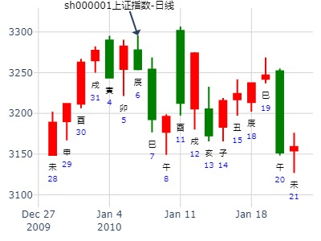
主帖标题: [原创]每日预测深沪两市大盘方向
公历时间：2008年3月5日9时30分 星期三
农历时间：戊子年正月廿八巳时
干支：戊子年 甲寅月 甲辰日 己巳时 (旬空：寅卯)
神煞：驿马—寅 桃花—酉 日禄—寅 贵人—丑，未
特别提示您：今天13时13分交惊蛰节
艮宫：山天大畜 乾宫：火天大有（归魂）
六神 伏 神 【本 卦】 【变 卦】
玄武 ▅▅▅▅▅ 官鬼丙寅木 ▅▅▅▅▅ 父母己巳火 应
白虎 ▅▅ ▅▅ 妻财丙子水 应 ▅▅ ▅▅ 兄弟己未土
螣蛇 ▅▅ ▅▅ 兄弟丙戌土 ×→ ▅▅▅▅▅ 子孙己酉金
勾陈 子孙丙申金 ▅▅▅▅▅ 兄弟甲辰土 ▅▅▅▅▅ 兄弟甲辰土 世
朱雀 父母丙午火 ▅▅▅▅▅ 官鬼甲寅木 世 ▅▅▅▅▅ 官鬼甲寅木
青龙 ▅▅▅▅▅ 妻财甲子水 ▅▅▅▅▅ 妻财甲子水
分析：山天大畜为蓄积能量待发，将冲破阻力，全仓，互式雷泽归妹为回归，归帐，浮云蔽日，股市沉浮，哪来哪去，化火天大有为向上回归，顺势而作，大有收获．空方值日令，多方被日合放量横盘，财星休于月入日墓令，行情已过去，不参与，空方发动，为空头集中发力，伏神多方暗被日令生助，还是看好农历三月行情，官星出空不空因月建最后半一天临朱雀，可能与股票印税花改革商议研究，出空之后到值日令才推出这个计划．建议：短线高手参与．属于个人观点！
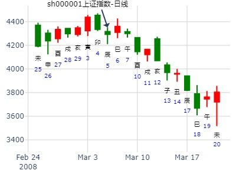
主帖标题: 六爻预测3日大盘行情
公历起卦时间：2011年3月3日9时30分 (手工指定)
干支：辛卯年 庚寅月 丁巳日 乙巳时 （日空：子丑）
神煞：驿马－亥 桃花－午 日禄－午 贵人－酉，亥
艮宫：山天大畜 乾宫：火天大有 (归魂)
六神 伏神 本 卦 变 卦
青龙 官鬼丙寅木 ▅▅▅▅▅ 父母己巳火 ▅▅▅▅▅ 应
玄武 妻财丙子水 ▅▅ ▅▅ 应 兄弟己未土 ▅▅ ▅▅
白虎 兄弟丙戌土 ▅▅ ▅▅ ╳→ 子孙己酉金 ▅▅▅▅▅
腾蛇 子孙丙申金 兄弟甲辰土 ▅▅▅▅▅ 兄弟甲辰土 ▅▅▅▅▅ 世
勾陈 父母丙午火 官鬼甲寅木 ▅▅▅▅▅ 世 官鬼甲寅木 ▅▅▅▅▅
朱雀 妻财甲子水 ▅▅▅▅▅ 妻财甲子水 ▅▅▅▅▅
两个卦象有大吉利，蓄积能量待发，将冲破阻力，全仓，向上回归，顺势而作，大有收获！兄弟化子孙：空头施尽开始转多，转机出现，建议：最后急跌吃入！估计明天低开高走，上方有阻力震荡，下午突破回升！个人观点！
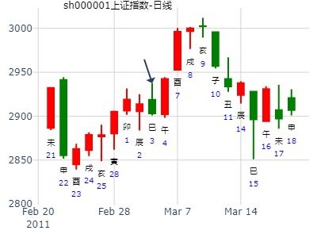
午日妻财被冲实，涨。酉日子孙值日，涨。
春天的此卦，子日容易跌，是否跟午火暗动有关？
占3月7日-11日上证走势，得大畜之大有。
公历起卦时间：2011年3月6日22时43分 (手工指定)
惊蛰：2011年03月06日06时43分
干支：辛卯年 辛卯月 庚申日 丁亥时 （日空：子丑）
艮宫：山天大畜 乾宫：火天大有 (归魂)
六神 伏神 本 卦 变 卦
腾蛇 官鬼丙寅木 ▅▅▅▅▅ 父母己巳火 ▅▅▅▅▅ 应
勾陈 妻财丙子水 ▅▅ ▅▅ 应 兄弟己未土 ▅▅ ▅▅
朱雀 兄弟丙戌土 ▅▅ ▅▅ ╳→ 子孙己酉金 ▅▅▅▅▅
青龙 子孙丙申金 兄弟甲辰土 ▅▅▅▅▅ 兄弟甲辰土 ▅▅▅▅▅ 世
玄武 父母丙午火 官鬼甲寅木 ▅▅▅▅▅ 世 官鬼甲寅木 ▅▅▅▅▅
白虎 妻财甲子水 ▅▅▅▅▅ 妻财甲子水 ▅▅▅▅▅
马后炮：关键是酉金月破。酉日月破值日大涨，戌日兄化子空化多涨。
亥日财得日助，最高点。 子日午火暗动，跌。
3月7日酉日大涨，子孙值日。
8日戌日小阳带下影。先兄再子孙。
9日亥日小星。
10日子日出空，即受克。大跌。
六四：童豕之牿，元吉。象曰：六四元吉，有喜也。
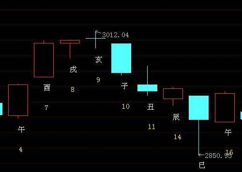
主帖标题: 上证指数卯月情况
出生年：年 性别：男 占事: 000001
起卦方式：手动摇卦 公历时间：2013年3月6日10时19分
干支：癸巳年 乙卯月 辛未日 癸巳时
旬空：午未 子丑 戌亥 午未
艮宫：山天大畜 乾宫：火天大有（归魂）
六神 伏 神 【本 卦】 【变 卦】
螣蛇 ▄▄▄▄▄ 官鬼丙寅木 ▄▄▄▄▄ 父母己巳火 应
勾陈 ▄▄ ▄▄ 妻财丙子水 应 ▄▄ ▄▄ 兄弟己未土
朱雀 ▄▄ ▄▄ 兄弟丙戌土 X-> ▄▄▄▄▄ 子孙己酉金
青龙 子孙丙申金 ▄▄▄▄▄ 兄弟甲辰土 ▄▄▄▄▄ 兄弟甲辰土 世
玄武 父母丙午火 ▄▄▄▄▄ 官鬼甲寅木 世 ▄▄▄▄▄ 官鬼甲寅木
白虎 ▄▄▄▄▄ 妻财甲子水 ▄▄▄▄▄ 妻财甲子水
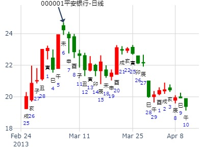
卯月子孙破，直接见顶。逢20日酉日大涨一天而己。
7-8日也是申酉不见涨，莫非跟戌空有关系。
主帖标题: 31号大盘走势 数理卦
出生：2020 年 性别：男 占事：4月1号大盘 数理卦
排卦：元亨利贞网六爻在线排盘系统 http://www.china95.net
公历起卦时间：2020年3月31日15时36分 (手工指定)
干支：庚子年 己卯月 癸酉日 庚申时 （日空：戌亥）
艮宫：山天大畜 乾宫：火天大有 (归魂)
六神 伏神 本 卦 变 卦
白虎 官鬼丙寅木 ▅▅▅▅▅ 父母己巳火 ▅▅▅▅▅ 应
螣蛇 妻财丙子水 ▅▅ ▅▅ 应 兄弟己未土 ▅▅ ▅▅
勾陈 兄弟丙戌土 ▅▅ ▅▅ ╳→ 子孙己酉金 ▅▅▅▅▅
朱雀 子孙丙申金 兄弟甲辰土 ▅▅▅▅▅ 兄弟甲辰土 ▅▅▅▅▅ 世
青龙 父母丙午火 官鬼甲寅木 ▅▅▅▅▅ 世 官鬼甲寅木 ▅▅▅▅▅
玄武 妻财甲子水 ▅▅▅▅▅ 妻财甲子水 ▅▅▅▅▅
注：数理卦，仅供娱乐。
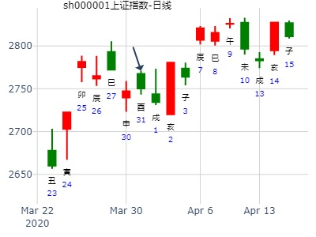
主帖标题: 占预光金铅今天(23)走势!
公历时间：2009年4月23日7时30分
农历时间：己丑年 三月二十八日辰时
干支：己丑年 戊辰月 戊戌日 丙辰时 旬空：午未 戌亥 辰巳 子丑
神煞：驿马─申 桃花─卯 日禄─巳 贵人─丑，未
艮宫：山天大畜 乾宫：火天大有（归魂）
六神 伏 神 【本 卦】 【变 卦】
朱雀 ▄▄▄▄▄ 官鬼丙寅木 ▄▄▄▄▄ 父母己巳火 应
青龙 ▄▄ ▄▄ 妻财丙子水 应 ▄▄ ▄▄ 兄弟己未土
玄武 ▄▄ ▄▄ 兄弟丙戌土 X-> ▄▄▄▄▄ 子孙己酉金
白虎 子孙丙申金 ▄▄▄▄▄ 兄弟甲辰土 ▄▄▄▄▄ 兄弟甲辰土 世
螣蛇 父母丙午火 ▄▄▄▄▄ 官鬼甲寅木 世 ▄▄▄▄▄ 官鬼甲寅木
勾陈 ▄▄▄▄▄ 妻财甲子水 ▄▄▄▄▄ 妻财甲子水
此卦兄弟旺且多为大忌，最喜兄动化子。
今天亥日助财，可望上涨。
日建亥又合寅鬼，到底市况反映怎么样的情况呢？需要观察。
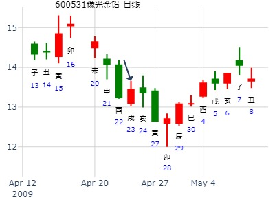
主帖标题: [09己丑岁每日大盘预测实践] 沪市大盘指数涨跌！开市日每天更新！
占事: 4月29日甲辰日沪市大盘指数涨跌！
起卦方式：手工指定 周易天地www.64gua.com六爻线上排盘系统
公历时间：2009年4月28日16时44分
干支：己丑年 戊辰月 癸卯日 庚申时 旬空：午未 戌亥 辰巳 子丑
神煞：驿马─巳 桃花─子 日禄─子 贵人─巳，卯
艮宫：山天大畜 乾宫：火天大有（归魂）
六神 伏 神 【本 卦】 【变 卦】
白虎 ▄▄▄▄▄ 官鬼丙寅木 ▄▄▄▄▄ 父母己巳火 应
螣蛇 ▄▄ ▄▄ 妻财丙子水 应 ▄▄ ▄▄ 兄弟己未土
勾陈 ▄▄ ▄▄ 兄弟丙戌土 X-> ▄▄▄▄▄ 子孙己酉金
朱雀 子孙丙申金 ▄▄▄▄▄ 兄弟甲辰土 ▄▄▄▄▄ 兄弟甲辰土 世
青龙 父母丙午火 ▄▄▄▄▄ 官鬼甲寅木 世 ▄▄▄▄▄ 官鬼甲寅木
玄武 ▄▄▄▄▄ 妻财甲子水 ▄▄▄▄▄ 妻财甲子水
应生世！低开，资金注入，拉升！收盘涨！涨幅2.0以上..........
[此贴子已经被作者于2009-4-28 20:25:08编辑过]
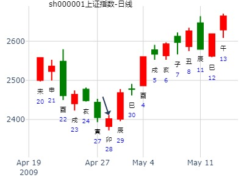
主帖标题: [原创]2007年5月21日周一上海大盘走势
卦方式：手动摇卦 周易天地www.64gua.com六爻线上排盘系统
公历时间：2007年5月19日12时37分
干支：丁亥年 乙巳月 癸丑日 戊午时 旬空：午未 寅卯 寅卯 子丑
神煞：驿马─亥 桃花─午 日禄─子 贵人─巳，卯
艮宫：山天大畜 乾宫：火天大有（归魂）
六神 伏 神 【本 卦】 【变 卦】
白虎 ▄▄▄▄▄ 官鬼丙寅木 ▄▄▄▄▄ 父母己巳火 应
螣蛇 ▄▄ ▄▄ 妻财丙子水 应 ▄▄ ▄▄ 兄弟己未土
勾陈 ▄▄ ▄▄ 兄弟丙戌土 X-> ▄▄▄▄▄ 子孙己酉金
朱雀 子孙丙申金 ▄▄▄▄▄ 兄弟甲辰土 ▄▄▄▄▄ 兄弟甲辰土 世
青龙 父母丙午火 ▄▄▄▄▄ 官鬼甲寅木 世 ▄▄▄▄▄ 官鬼甲寅木
玄武 ▄▄▄▄▄ 妻财甲子水 ▄▄▄▄▄ 妻财甲子水
跳空低开，最少下跌30点后，开始回升；兄弟动而化子孙，也暗示着下跌之后有小幅度上涨，周一鬼出空有用，制约兄弟，所以，这个局面还是慎重！虽然下跌幅度不大，但今后几天的走向不好！
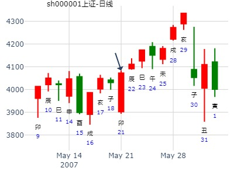
卯日动而逢合，或是合绊兄弟不发作，或是兄化子的应期？
主帖标题: 六爻预测31日大盘行情
公历起卦时间：2011年5月31日9时30分 (手工指定)
干支：辛卯年 癸巳月 丙戌日 癸巳时 （日空：午未）
神煞：驿马－申 桃花－卯 日禄－巳 贵人－酉，亥
艮宫：山天大畜 乾宫：火天大有 (归魂)
六神 伏神 本 卦 变 卦
青龙 官鬼丙寅木 ▅▅▅▅▅ 父母己巳火 ▅▅▅▅▅ 应
玄武 妻财丙子水 ▅▅ ▅▅ 应 兄弟己未土 ▅▅ ▅▅
白虎 兄弟丙戌土 ▅▅ ▅▅ ╳→ 子孙己酉金 ▅▅▅▅▅
腾蛇 子孙丙申金 兄弟甲辰土 ▅▅▅▅▅ 兄弟甲辰土 ▅▅▅▅▅ 世
勾陈 父母丙午火 官鬼甲寅木 ▅▅▅▅▅ 世 官鬼甲寅木 ▅▅▅▅▅
朱雀 妻财甲子水 ▅▅▅▅▅ 妻财甲子水 ▅▅▅▅▅
大蓄卦：蓄积能量待发，将冲破阻力，全仓。大有卦：向上回归，顺势而作，大有收获。兄弟化子孙：空头施尽开始转多，转机出现，建议：最后急跌吃入！个人观点！
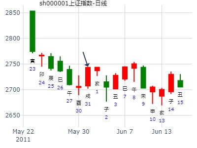
昨天焦煤 大涨看出来了 买对了
10:14:48
大道至简 2014-6-6 10:14:48
昨天的卦如何？
九戒 2014-6-6 10:15:41
女 占事：焦煤1501六月五日走势
易经股市论坛 ww.yijingstock.com
公历时间：2014年6月5日7时44分
干 支：甲午年 己巳月 丁未日 甲辰时
旬 空：辰巳 戌亥 (寅卯) 寅卯
艮宫：山天大畜 乾宫：火天大有（归魂）
六神 伏 神 【本 卦】 【变 卦】
青龙 ▄▄▄▄▄ 官鬼丙寅木 ▄▄▄▄▄ 父母己巳火 应
玄武 ▄▄ ▄▄ 妻财丙子水 应 ▄▄ ▄▄ 兄弟己未土
白虎 ▄▄ ▄▄ 兄弟丙戌土 X-> ▄▄▄▄▄ 子孙己酉金
螣蛇 子孙丙申金 ▄▄▄▄▄ 兄弟甲辰土 ▄▄▄▄▄ 兄弟甲辰土 世
勾陈 父母丙午火 ▄▄▄▄▄ 官鬼甲寅木 世 ▄▄▄▄▄ 官鬼甲寅木
朱雀 ▄▄▄▄▄ 妻财甲子水 ▄▄▄▄▄ 妻财甲子水
蛊之蒙。
姓名： 男 占事：焦煤1501 65
起卦方式：手动摇卦 易经股市论坛
公历时间：2014年6月5日7时37分
干 支：甲午年 己巳月 丁未日 甲辰时
旬 空：辰巳 戌亥 (寅卯) 寅卯
巽宫：山风蛊（归魂） 离宫：山水蒙
六神 伏 神 【本 卦】 【变 卦】
青龙 ▄▄▄▄▄ 兄弟丙寅木 应 ▄▄▄▄▄ 兄弟丙寅木
玄武 子孙辛巳火 ▄▄ ▄▄ 父母丙子水 ▄▄ ▄▄ 父母丙子水
白虎 ▄▄ ▄▄ 妻财丙戌土 ▄▄ ▄▄ 妻财丙戌土 世
螣蛇 ▄▄▄▄▄ 官鬼辛酉金 世O-> ▄▄ ▄▄ 子孙戊午火
勾陈 ▄▄▄▄▄ 父母辛亥水 ▄▄▄▄▄ 妻财戊辰土
朱雀 ▄▄ ▄▄ 妻财辛丑土 ▄▄ ▄▄ 兄弟戊寅木 应
《易经》第十八卦 蛊 山风蛊 艮
同人之大有。
九戒 2014-6-6 10:16:01
姓名： 男 占事：851焦煤1501 收盘
起卦方式：手动摇卦 易经股市论坛
www.yijingstock.com 在线排盘系统
公历时间：2014年6月5日13时0分
干 支：甲午年 己巳月 丁未日 丁未时
旬 空：辰巳 戌亥 (寅卯) 寅卯
离宫：天火同人（归魂） 乾宫：火天大有（归魂）
六神 【本 卦】 【变 卦】
青龙 ▄▄▄▄▄ 子孙壬戌土 应 ▄▄▄▄▄ 兄弟己巳火 应
玄武 ▄▄▄▄▄ 妻财壬申金 O-> ▄▄ ▄▄ 子孙己未土
白虎 ▄▄▄▄▄ 兄弟壬午火 ▄▄▄▄▄ 妻财己酉金
螣蛇 ▄▄▄▄▄ 官鬼己亥水 世 ▄▄▄▄▄ 子孙甲辰土 世
勾陈 ▄▄ ▄▄ 子孙己丑土 X-> ▄▄▄▄▄ 父母甲寅木
朱雀 ▄▄▄▄▄ 父母己卯木 ▄▄▄▄▄ 官鬼甲子水
九戒 2014-6-6 10:16:15
下午这个 更加验证 大涨
10:17:03
九戒 2014-6-6 10:17:03
兄弟丙戌土 X-> ▄▄▄▄▄ 子孙己酉金 先跌后涨
大道至简 2014-6-6 10:17:13
完美。
九戒 2014-6-6 10:17:25
是的 很有把握
大道至简 2014-6-6 10:17:41
看来天时章用测走势，还是有相当准确率
九戒 2014-6-6 10:17:50
是的
九戒 2014-6-6 10:18:04
先兄弟 后子孙
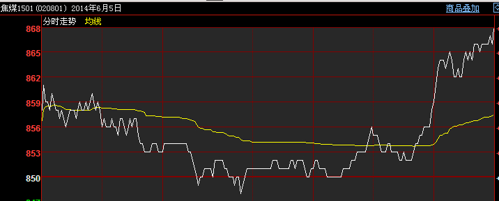
2022年6月8日18时48分 (在线摇卦) 长城汽车6月走势。大畜之大有。
干支：壬寅年 丙午月 壬辰日 己酉时 （日空：午未）
艮宫：山天大畜 乾宫：火天大有 (归魂)
六神 伏神 本 卦 变 卦
白虎 官鬼丙寅木 ▅▅▅▅▅ 父母己巳火 ▅▅▅▅▅ 应
螣蛇 妻财丙子水 ▅▅ ▅▅ 应 兄弟己未土 ▅▅ ▅▅
勾陈 兄弟丙戌土 ▅▅ ▅▅ ╳→ 子孙己酉金 ▅▅▅▅▅
朱雀 子孙丙申金 兄弟甲辰土 ▅▅▅▅▅ 兄弟甲辰土 ▅▅▅▅▅ 世
青龙 父母丙午火 官鬼甲寅木 ▅▅▅▅▅ 世 官鬼甲寅木 ▅▅▅▅▅
玄武 妻财甲子水 ▅▅▅▅▅ 妻财甲子水 ▅▅▅▅▅
六四：童豕之牿，元吉。象曰：六四元吉，有喜也。
参考：损之睽，长城汽车到立秋。.note
此卦：此卦月破入墓照样涨。不过空间小，就酉戌亥几天涨。就被阻碍了。
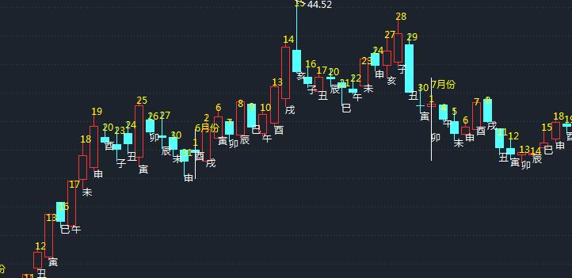
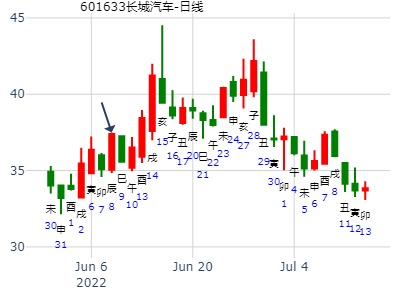
主帖标题: [原创]每日预测深沪两市大盘方向
公历时间：2008年7月7日9时30分 星期一
干支：戊子年 己未月 戊申日 丁巳时 (旬空：寅卯)
神煞：驿马—寅 桃花—酉 日禄—巳 贵人—丑，未特别提示您：今天02时35分交小暑节
艮宫：山天大畜 乾宫：火天大有（归魂）
六神 伏 神 【本 卦】 【变 卦】
朱雀 ▅▅▅▅▅ 官鬼丙寅木 ▅▅▅▅▅ 父母己巳火 应
青龙 ▅▅ ▅▅ 妻财丙子水 应 ▅▅ ▅▅ 兄弟己未土
玄武 ▅▅ ▅▅ 兄弟丙戌土 ×→ ▅▅▅▅▅ 子孙己酉金
白虎 子孙丙申金 ▅▅▅▅▅ 兄弟甲辰土 ▅▅▅▅▅ 兄弟甲辰土 世
螣蛇 父母丙午火 ▅▅▅▅▅ 官鬼甲寅木 世 ▅▅▅▅▅ 官鬼甲寅木
勾陈 ▅▅▅▅▅ 妻财甲子水 ▅▅▅▅▅ 妻财甲子水
分析:归魂为行情即将逆转回归.山天大蓄为蓄积之象,蓄积能量待发,将冲破阻力,全仓,互式雷泽归妹为归帐之象,浮云蔽日,股市沉浮,哪来哪去,化火天大有为向上回归,顺势而作,大有收获.空化多方原神:空头施尽开始转多,转机出现,建议:最后急跌吃入.周一多方临日上涨!周二多方临日上涨!周三空方临日下跌!周四消息冲日下跌!周五冲消息下跌!先两天上涨后三天下跌!从月线看到乾宫稳定反弹多头排列上去,从中线看到艮宫存在反弹技术性要求,从板块分析机会:注意酒店,饮食,航运,机电,环保,介入回调后时期,20天线可以建仓机会!属于个人观点!
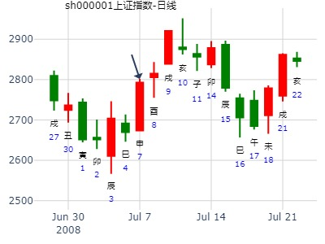
占事：下周7月14-18日会跌不？
公历起卦时间：2014年7月10日8时52分 (在线摇卦)
干支：甲午年 辛未月 壬午日 甲辰时 （日空：申酉）
艮宫：山天大畜 乾宫：火天大有 (归魂)
六神 伏神 本 卦 变 卦
白虎 官鬼丙寅木 ▅▅▅▅▅ 父母己巳火 ▅▅▅▅▅ 应
腾蛇 妻财丙子水 ▅▅ ▅▅ 应 兄弟己未土 ▅▅ ▅▅
勾陈 兄弟丙戌土 ▅▅ ▅▅ ╳→ 子孙己酉金 ▅▅▅▅▅
朱雀 子孙丙申金 兄弟甲辰土 ▅▅▅▅▅ 兄弟甲辰土 ▅▅▅▅▅ 世
青龙 父母丙午火 官鬼甲寅木 ▅▅▅▅▅ 世 官鬼甲寅木 ▅▅▅▅▅
玄武 妻财甲子水 ▅▅▅▅▅ 妻财甲子水 ▅▅▅▅▅
此处子孙酉金空，是玄机。
兄化空，视为兄空还是子孙空？
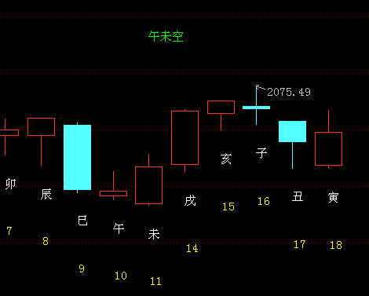
丑日墓金跌。
子日冲旬空午火冲实。实际个股跌得历害。
寅日冲子孙申金暗动出伏。涨。
大畜之大有,科大讯飞-未来3个月走势 by 论坛
时间: 2015-07-15
干支: 乙未年癸未月壬辰日 (旬空: 午未 )
大畜 大有(归魂)
六神 伏神 本 卦 变 卦
白虎 ▅▅▅▅▅ 官鬼寅木 ▅▅▅▅▅ 父母巳火 应
腾蛇 ▅▅ ▅▅ 妻财子水 应 ▅▅ ▅▅ 兄弟未土
勾陈 ▅▅ ▅▅ 兄弟戌土 Ｘ→ ▅▅▅▅▅ 子孙酉金
朱雀 子孙申金▅▅▅▅▅ 兄弟辰土 ▅▅▅▅▅ 兄弟辰土 世
青龙 父母午火▅▅▅▅▅ 官鬼寅木 世 ▅▅▅▅▅ 官鬼寅木
玄武 ▅▅▅▅▅ 妻财子水 ▅▅▅▅▅ 妻财子水
子孙为金，但申月世月破，暴跌。
午月财月破，暴跌。
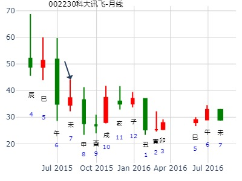
未来二周上证？-晖
时间: 2019-07-05 20时05分
干支: 己亥年庚午月癸卯日 (旬空: 辰巳 )
山天大畜 火天大有(归魂)
六神 伏神 本 卦 变 卦
白虎 ▅▅▅▅▅ 官鬼寅木 ▅▅▅▅▅ 父母巳火 应
腾蛇 ▅▅ ▅▅ 妻财子水 应 ▅▅ ▅▅ 兄弟未土
勾陈 ▅▅ ▅▅ 兄弟戌土 Ｘ→ ▅▅▅▅▅ 子孙酉金
朱雀 子孙申金▅▅▅▅▅ 兄弟辰土 ▅▅▅▅▅ 兄弟辰土 世
青龙 父母午火▅▅▅▅▅ 官鬼寅木 世 ▅▅▅▅▅ 官鬼寅木
玄武 ▅▅▅▅▅ 妻财子水 ▅▅▅▅▅ 妻财子水
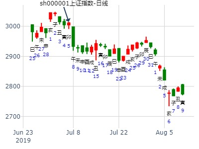
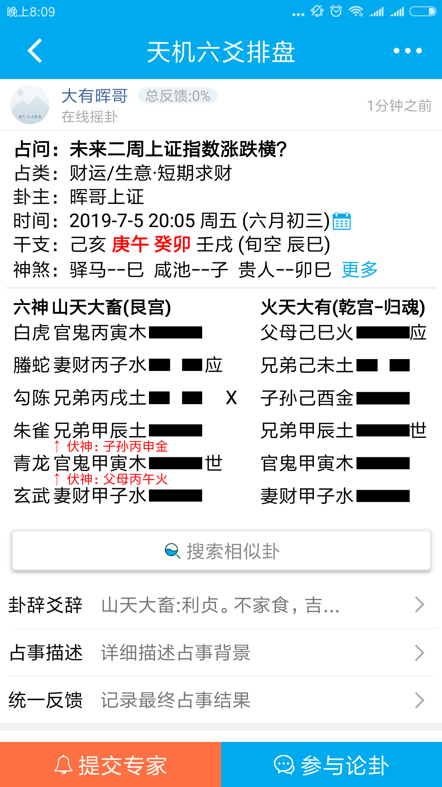
马后炮：财月破，酉金日破。结果跌为主。
性别：男 占事：8月23-27日上证指数
公历起卦时间：2010年8月23日0时2分
干支：庚寅年 甲申月 乙巳日 丙子时 （日空：寅卯）
汉字：上证指数 笔画：总数 - 40 上卦数：15 下卦数：25
艮宫：山天大畜 乾宫：火天大有 (归魂)
六神 伏神 本 卦 变 卦
玄武 官鬼丙寅木 ▅▅▅▅▅ 父母己巳火 ▅▅▅▅▅ 应
白虎 妻财丙子水 ▅▅ ▅▅ 应 兄弟己未土 ▅▅ ▅▅
腾蛇 兄弟丙戌土 ▅▅ ▅▅ ╳→ 子孙己酉金 ▅▅▅▅▅
勾陈 子孙丙申金 兄弟甲辰土 ▅▅▅▅▅ 兄弟甲辰土 ▅▅▅▅▅ 世
朱雀 父母丙午火 官鬼甲寅木 ▅▅▅▅▅ 世 官鬼甲寅木 ▅▅▅▅▅
青龙 妻财甲子水 ▅▅▅▅▅ 妻财甲子水 ▅▅▅▅▅
先跌后涨。
午日出伏，但也冲了财子水暗动，震荡。（飞神寅木月破）
未日助戌土，跌。
酉日开涨。
子日财值日，大涨。
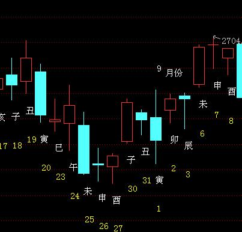
关于伏神有用者有六：
伏神得日月生者一也；
伏神旺相者二也；
伏神得动爻生者三也；
伏神得飞神生者四也；
伏神得遇日月动爻冲克飞神者五也；（飞爻月破可以算）
伏神得遇飞神空破休囚墓绝者六也。 （注：空下伏神时）
此六者皆有用之伏神也，虽曰不现亦如现矣。
《黄金策》曰：空下伏神，易于引拨。此论近理，不独飞神空亡而伏神易出，飞神临破休囚入墓，伏神皆易出也。何也？飞神逢破墓衰空，虽有若无，所以伏神易于出现。
主帖标题: 新五丰27日涨跌
姓名：姓名 出生年份：1975年 性别：男
占事: 新丰今天涨跌
起卦方式：手动摇卦 (周易世界 www.zhouyiworld.com)
公历时间：2013年9月27日7时47分
干 支：癸巳年 辛酉月 丙申日 壬辰时 旬 空：午未 子丑 辰巳 午未
神 煞：驿马─寅 桃花─酉 日禄─巳 贵人─酉，亥
艮宫：山天大畜 乾宫：火天大有（归魂）
六神 伏 神 【本 卦】 【变 卦】
青龙 ▄▄▄▄▄ 官鬼丙寅木 ▄▄▄▄▄ 父母己巳火 应
玄武 ▄▄ ▄▄ 妻财丙子水 应 ▄▄ ▄▄ 兄弟己未土
白虎 ▄▄ ▄▄ 兄弟丙戌土 X-> ▄▄▄▄▄ 子孙己酉金
螣蛇 子孙丙申金 ▄▄▄▄▄ 兄弟甲辰土 ▄▄▄▄▄ 兄弟甲辰土 世
勾陈 父母丙午火 ▄▄▄▄▄ 官鬼甲寅木 世 ▄▄▄▄▄ 官鬼甲寅木
朱雀 ▄▄▄▄▄ 妻财甲子水 ▄▄▄▄▄ 妻财甲子水
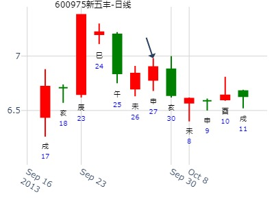
主帖标题: 9月27-9月30有涨停的股票！！！
性别：男 占事：000813下周走势
排卦：元亨利贞网六爻在线排盘系统 http://www.china95.net
公历起卦时间：2016年9月23日14时11分 (手工指定)
干支：丙申年 丁酉月 戊申日 己未时 （日空：寅卯）
神煞：驿马－寅 桃花－酉 日禄－巳 贵人－丑，未
艮宫：山天大畜 乾宫：火天大有 (归魂)
六神 伏神 本 卦 变 卦
朱雀 官鬼丙寅木 ▅▅▅▅▅ 父母己巳火 ▅▅▅▅▅ 应
青龙 妻财丙子水 ▅▅ ▅▅ 应 兄弟己未土 ▅▅ ▅▅
玄武 兄弟丙戌土 ▅▅ ▅▅ ╳→ 子孙己酉金 ▅▅▅▅▅
白虎 子孙丙申金 兄弟甲辰土 ▅▅▅▅▅ 兄弟甲辰土 ▅▅▅▅▅ 世
腾蛇 父母丙午火 官鬼甲寅木 ▅▅▅▅▅ 世 官鬼甲寅木 ▅▅▅▅▅
勾陈 妻财甲子水 ▅▅▅▅▅ 妻财甲子水 ▅▅▅▅▅
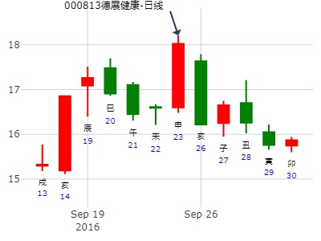
主帖标题: 钱的反正面与阴阳
wcnmmhs 发表于 2022-9-28 01:12
你误入歧途了！ 你上错路上了！ 股票的价格、购彩的本金、所赚到的钱、赔掉的钱，——哪个不是财爻啊 ...
000619 今天的数理卦是
壬寅 己酉 甲申 壬申 (午未空) 壬寅年八月初三(2022/09/28 15:00:00)
山天大畜 火天大有
玄武 官鬼寅木 ／ 父母巳火 ／ 应
白虎 妻财子水 ∥ 应 兄弟未土 ∥
腾蛇 兄弟丙戌 × 子孙己酉 ／
子孙申金：勾陈 兄弟辰土 ／ 兄弟辰土 ／ 世
父母午火：朱雀 官鬼甲寅 ／ 世 官鬼甲寅 ／
青龙 妻财子水 ／ 妻财子水 ／
我刚用公式选出相同卦象(714)的还有
688226 002028 600400 002246 002767
由于数据不全,多半有遗漏
无论是数理卦还是摇卦,常常会遇到废卦,正因为如此,众人的应验率不高.
结论:占卦的功夫,就是对号入座的功夫,灵机达变的功夫.
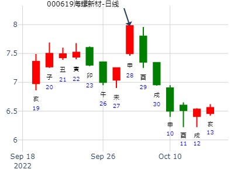
主帖标题: [原创]每日预测深沪两市大盘指数
公历时间：2007年10月25日9时30分 星期四
干支：丁亥年 庚戌月 壬辰日 乙巳时 (旬空：午未)
艮宫：山天大畜 乾宫：火天大有（归魂）
六神 伏 神 【本 卦】 【变 卦】
螣蛇 ▅▅▅▅▅ 官鬼丙寅木 ▅▅▅▅▅ 父母己巳火 应
勾陈 ▅▅ ▅▅ 妻财丙子水 应 ▅▅ ▅▅ 兄弟己未土
朱雀 ▅▅ ▅▅ 兄弟丙戌土 ×→ ▅▅▅▅▅ 子孙己酉金
青龙 子孙丙申金 ▅▅▅▅▅ 兄弟甲辰土 ▅▅▅▅▅ 兄弟甲辰土 世
玄武 父母丙午火 ▅▅▅▅▅ 官鬼甲寅木 世 ▅▅▅▅▅ 官鬼甲寅木
白虎 ▅▅▅▅▅ 妻财甲子水 ▅▅▅▅▅ 妻财甲子水
分析:上海大盘涨跌指数:山天大畜:蓄积,停止,升,蓄积能量待发,将冲破阻力,全仓,大蓄之冲必可蓄.火天大有:乾健,光明,反弹,延伸浪,向上回归,顺势而作,大有收获,今日满堂行情展.空化多方原神,空头施尽开始转多,转机出现,建议:最后急跌吃入.
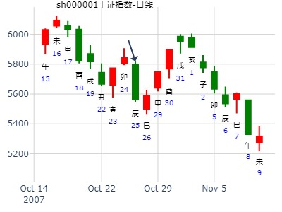
大畜之大有，2014.10.27-11.7，IF1411股指期货2周内走势（刘占军铜钱）
公历起卦时间：2014年10月26日23时51分 (手工指定)
干支：甲午年 甲戌月 辛未日 戊子时 （日空：戌亥）
艮宫：山天大畜 乾宫：火天大有 (归魂)
六神 伏神 本 卦 变 卦
腾蛇 官鬼丙寅木 ▅▅▅▅▅ 父母己巳火 ▅▅▅▅▅ 应
勾陈 妻财丙子水 ▅▅ ▅▅ 应 兄弟己未土 ▅▅ ▅▅
朱雀 兄弟丙戌土 ▅▅ ▅▅ ╳→ 子孙己酉金 ▅▅▅▅▅
青龙 子孙丙申金 兄弟甲辰土 ▅▅▅▅▅ 兄弟甲辰土 ▅▅▅▅▅ 世
玄武 父母丙午火 官鬼甲寅木 ▅▅▅▅▅ 世 官鬼甲寅木 ▅▅▅▅▅
白虎 妻财甲子水 ▅▅▅▅▅ 妻财甲子水 ▅▅▅▅▅
兄得日月助，子孙得日月生。
所以财弱不是主要矛盾了。而是兄化子的问题。
申日子孙一出空就开涨。
六四：童豕之牿，元吉。象曰：六四元吉，有喜也。
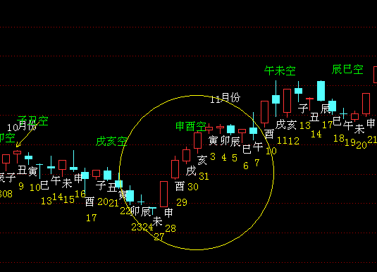
主帖标题: [原创]每日预测深沪两市大盘指数
公历时间：2007年11月19日9时30分 星期一
干支：丁亥年 辛亥月 丁巳日 乙巳时 (旬空：子丑)
神煞：驿马—亥 桃花—午 日禄—午 贵人—酉，亥
艮宫：山天大畜 乾宫：火天大有（归魂）
六神 伏 神 【本 卦】 【变 卦】
青龙 ▅▅▅▅▅ 官鬼丙寅木 ▅▅▅▅▅ 父母己巳火 应
玄武 ▅▅ ▅▅ 妻财丙子水 应 ▅▅ ▅▅ 兄弟己未土
白虎 ▅▅ ▅▅ 兄弟丙戌土 ×→ ▅▅▅▅▅ 子孙己酉金
螣蛇 子孙丙申金 ▅▅▅▅▅ 兄弟甲辰土 ▅▅▅▅▅ 兄弟甲辰土 世
勾陈 父母丙午火 ▅▅▅▅▅ 官鬼甲寅木 世 ▅▅▅▅▅ 官鬼甲寅木
朱雀 ▅▅▅▅▅ 妻财甲子水 ▅▅▅▅▅ 妻财甲子水
分析:上海大盘指数:前式大蓄之中皆可蓄,将冲破阻力行情,互式为雷泽归妹,有归帐之象,化大有为反弹,向上回归,顺势而作,大有收获.官鬼持世制兄弟发动,但时令空亡,无力制动兄弟,开盘低开底走,中间再下一下跌波段,艮止跌之象,然后报复反弹上涨收市之象.属于个人观点!
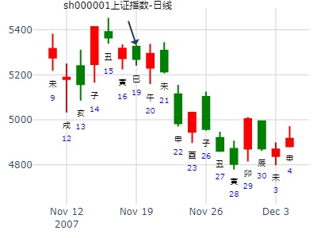
主帖标题: 数理卦提前锁定黒马
例:600215 2021年11月1号
辛丑 戊戌 癸丑 庚申 (寅卯空) 辛丑年九月廿五(2021/11/01 15:00:00)
山天大畜 火天大有
白虎 官鬼寅木 ／ 父母巳火 ／ 应
腾蛇 妻财子水 ∥ 应 兄弟未土 ∥
勾陈 兄弟丙戌 × 子孙己酉 ／
子孙申金：朱雀 兄弟辰土 ／ 兄弟辰土 ／ 世
父母午火：青龙 官鬼甲寅 ／ 世 官鬼甲寅 ／
玄武 妻财子水 ／ 妻财子水 ／
一、对号入座,与实际走势吻合;
二、推手为兄,临月令日令,实力強大;
三、变卦火天有,吉.
学习数理卦的目的是选股.
注；数理卦，仅供参考
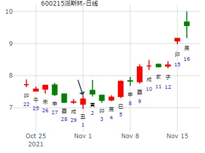
主帖标题: 南航何时割肉？
下周权沽能否得财？排卦：元亨利贞网六爻
公历起卦时间：2007年12月21日19时0分 (手工指定)
干支：丁亥年 壬子月 己丑日 甲戌时 （日空：午未）
神煞：驿马－亥 桃花－午 日禄－午 贵人－子，申
艮宫：山天大畜 乾宫：火天大有 (归魂)
六神 伏神 本 卦 变 卦
勾陈 官鬼丙寅木 ▅▅▅▅▅ 父母己巳火 ▅▅▅▅▅ 应
朱雀 妻财丙子水 ▅▅ ▅▅ 应 兄弟己未土 ▅▅ ▅▅
青龙 兄弟丙戌土 ▅▅ ▅▅ ╳→ 子孙己酉金 ▅▅▅▅▅
玄武 子孙丙申金 兄弟甲辰土 ▅▅▅▅▅ 兄弟甲辰土 ▅▅▅▅▅ 世
白虎 父母丙午火 官鬼甲寅木 ▅▅▅▅▅ 世 官鬼甲寅木 ▅▅▅▅▅
腾蛇 妻财甲子水 ▅▅▅▅▅ 妻财甲子水 ▅▅▅▅▅
主帖标题: [原创]每日预测沪市大盘方向
公历时间：2009年12月4日9时30分 星期五
干支：己丑年 乙亥月 癸未日 丁巳时 (旬空：申酉)
艮宫：山天大畜 乾宫：火天大有（归魂）
六神 伏 神 【本 卦】 【变 卦】
白虎 ▅▅▅▅▅ 官鬼丙寅木 ▅▅▅▅▅ 父母己巳火 应
螣蛇 ▅▅ ▅▅ 妻财丙子水 应 ▅▅ ▅▅ 兄弟己未土
勾陈 ▅▅ ▅▅ 兄弟丙戌土 ×→ ▅▅▅▅▅ 子孙己酉金
朱雀 子孙丙申金 ▅▅▅▅▅ 兄弟甲辰土 ▅▅▅▅▅ 兄弟甲辰土 世
青龙 父母丙午火 ▅▅▅▅▅ 官鬼甲寅木 世 ▅▅▅▅▅ 官鬼甲寅木
玄武 ▅▅▅▅▅ 妻财甲子水 ▅▅▅▅▅ 妻财甲子水
大蓄卦为蓄积之象,蓄积能量待发,将冲破阻力,全仓,化大有卦光明之象,向上回归,顺势而作,大有收获.空化多方原神:空头施尽开始转多,转机出现,建议:最后急跌吃入.个人观点!(关注大盘股)
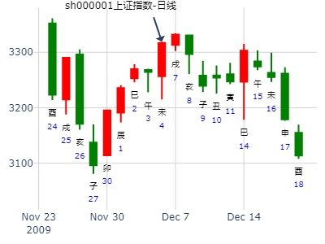
中国核建一年走势。 大畜之大有。.md
时间: 2016-12-09 8时16分
干支: 丙申年庚子月乙丑日 (旬空: 戌亥 )
山天大畜 火天大有(归魂)
六神 伏神 本 卦 变 卦
玄武 ▅▅▅▅▅ 官鬼寅木 ▅▅▅▅▅ 父母巳火 应
白虎 ▅▅ ▅▅ 妻财子水 应 ▅▅ ▅▅ 兄弟未土
腾蛇 ▅▅ ▅▅ 兄弟戌土 Ｘ→ ▅▅▅▅▅ 子孙酉金
勾陈 子孙申金▅▅▅▅▅ 兄弟辰土 ▅▅▅▅▅ 兄弟辰土 世
朱雀 父母午火▅▅▅▅▅ 官鬼寅木 世 ▅▅▅▅▅ 官鬼寅木
青龙 ▅▅▅▅▅ 妻财子水 ▅▅▅▅▅ 妻财子水
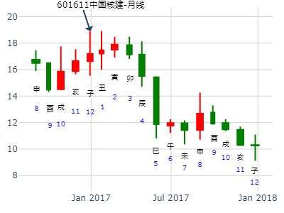
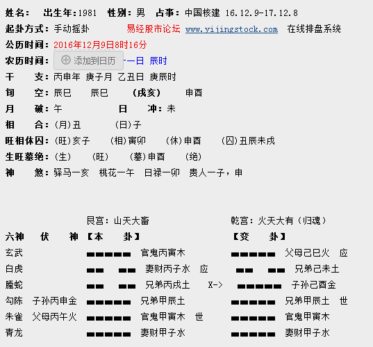
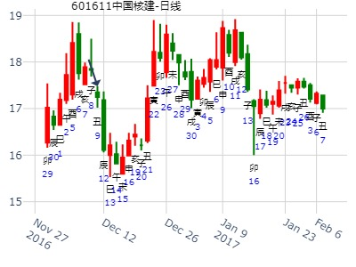